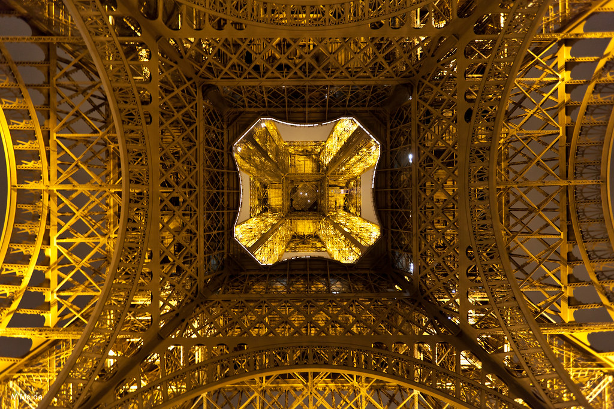
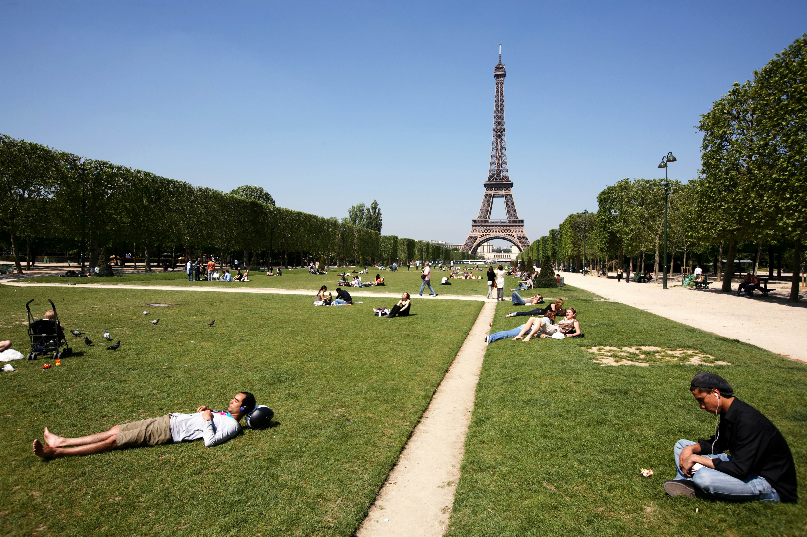
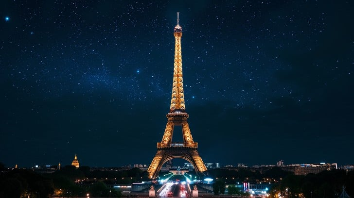

Welcome to the Eiffel Tower
The Eiffel Tower is one of the most famous structures in the world, symbolizing Paris and French culture. Standing 324 meters tall, it was completed in 1889 for the World's Fair.
Visitors can ascend the tower and enjoy breathtaking views of the Paris skyline. You can also enjoy restaurants and cafes within the tower itself. It is one of the most visited monuments in the world.
Address: Champ de Mars, 5 Avenue Anatole France, 75007 Paris, France


